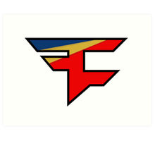

Counterstrike
FaZe Clan have secured the services of legendary Swedish Rifler, Olof 'olofmeister' Kajbjer.Last night it was announced that Olof 'olofmeister' Kajbjer had joined FaZe Clan in place of Fabien 'kioShima' Fiey. Following a disappointing showing at the PGL Major Krakow 2017, the American organisation has undergone their second player adjustment in August, the first being the addition of former Natus Vincere AWPer, Ladislav 'GuardiaN' Kovacs. Rumours had circulated amply, with the news finalising FaZe Clan's roster for the time being.
Olof 'olofmeister' Kajbjer has been a long-time member of Fnatic's core roster, securing two Major tournament titles over his three year stint with the London-based organisation. Over the entirety of 2015 Kajbjer was largely considered the finest CS:GO player in the world, consistently producing awe-inspiring performances for his team. Ever since, the team has struggled to live up to prior expectations, leading to various adjustments in the core roster, of which Kajbjer was not a part. Finally it seems his time has come to depart, leaving sweet memories that will live on throughout Counter-Strike history.
The Swede expressed the following post-transition:
“To FaZe and my fans, I am very happy to announce that I will be teaming up with the guys at FaZe Clan for the next chapter in my gaming career. As tough of a decision it was to leave Fnatic, a team that I will always carry with me in my heart, as easy it was to decide on the team I wanted to join - FaZe. FaZe is an incredible organization with a fantastic fans and above all a super talented and hungry team with players I admire, view as friends and share the same commitment and goals in becoming the worlds best at counter-strike. I have not felt this sense of excitment and positive nervousness in a long time. Today is the start of something new. See you in game and in the arena. Best, Olofmeister.”
FaZe Clan's Coach, Robert 'RobbaN' Dahlström said:
“I'm super excited to have olofmeister on the team. It's a guy that have everything that you want. During my time in FaZe there have been alot of roster changes trying to find a lineup that have the same goals and in the same time have good chemistry, we now have that. Now it's all about practice hard and find the best way to use our players. Thank you kioShiMa for many great memories together including one trophy and a big welcome to Olof!”